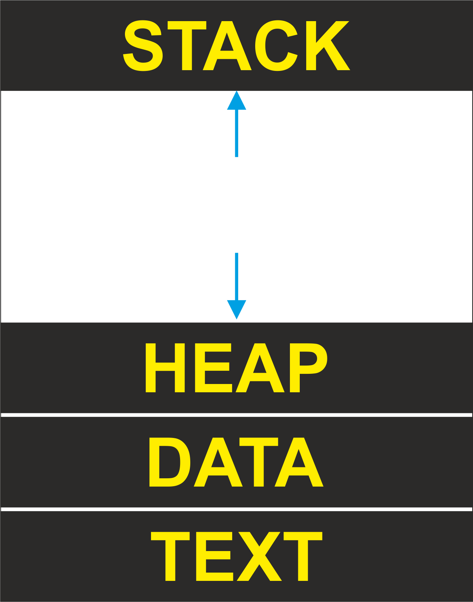

Programming
by Enidu Batuwanthudawe C i v i l E n g . | B . S c . i n I T
. . . . . . . . . . . . . . . . . . . .. . . . . . . . . . . . . . . . . . . .
what is a Computer Program ?
specific series of ordered instructions(operations) that tell a computer what to do.
Detailed plan or procedure for execute a specific plane(task) in a computer.
m is a sequence of instructions that can be executed by a computer to solve some problem or perform a specified task.
What is a programming language ?
e is an artificial language designed to automate the task of organizing and manipulating information, and to express problem solutions precisely.
steps to solve a problem?
Analyzing
What data are available?
Where is that data?
What formulas pertain to the problem?
What rules exist for working with the data?
What relationships exist among the data values?
Operating system (OS) memory management
OS memory management which ensures the availability of adequate memory resources for the objects and data structures of each running program at all times.
Application memory management
application memory management
allocates each individual program's required memory ,
and
optimizes
memory among programs
then
recycles freed-up memory space when the operation concludes.
tasks when a process is created
process inside main memory
process inside main memory

Stack
The process Stack contains the temporary data such as
method
function parameters
return address
local variables.
Heap
This is dynamically allocated memory to a process during its run time.
Data
This section contains the global and static variables.
Text
This includes the current activity represented by the value of Program Counter and the contents of the processor's registers.
Program
A computer program is a collection of instructions that performs a specific task when executed by a computer. When we compare a program with a process, we can conclude that a process is a dynamic instance of a computer program.
A part of a computer program that performs a well-defined task is known as an
Algorithm.
A collection of computer programs, libraries and related data are referred to as a software.
Process Life Cycle

Start
his is the initial state when a process is first started/created.
Ready
The process is waiting to be assigned to a processor. Ready processes are waiting to have the processor allocated to them by the operating system so that they can run. Process may come into this state after Start state or while running it by but interrupted by the scheduler to assign CPU to some other process.
Running
Once the process has been assigned to a processor by the OS scheduler, the process state is set to running and the processor executes its instructions.
Waiting
Process moves into the waiting state if it needs to wait for a resource, such as waiting for user input, or waiting for a file to become available.
Terminated or Exit
Once the process finishes its execution, or it is terminated by the operating system, it is moved to the terminated state where it waits to be removed from main memory.
Process Control Block (PCB)
A Process Control Block is a data structure maintained by the Operating System for every process. The PCB is identified by an integer process ID (PID). A PCB keeps all the information needed to keep track of a process
Process State
The current state of the process i.e., whether it is ready, running, waiting, or whatever.
Process privileges
This is required to allow/disallow access to system resources.
Process ID
Unique identification for each of the process in the operating system.
Pointer
A pointer to parent process.
Program Counter
A program counter is a register in a computer processor that contains the address (location) of the instruction being executed at the current time. As each instruction gets fetched,
CPU registers
Various CPU registers where process need to be stored for execution for running state.
CPU Scheduling Information
Process priority and other scheduling information which is required to schedule the process.
Memory management information
This includes the information of page table, memory limits, Segment table depending on memory used by the operating system.
Accounting information
This includes the amount of CPU used for process execution, time limits, execution ID etc.
IO status information
This includes a list of I/O devices allocated to the process.